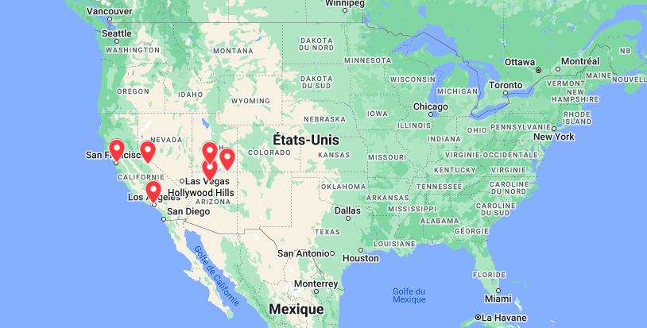

Direction Côte Ouest
Si vous aussi vous rêvez de vous envoler vers la Côte Ouest, comme le groupe 47ter dans leur fameuse chanson (a (ré)écouter ici :)
Et bien vous êtes au bon endroit ! Vous pouvez retrouver les meilleures destinations de l'ouest américain :
Avec ces destinations, voilà l'itinéraire que vous allez parcourir :

Sans oublier que même sans destination particulière, vous aurez toujours de quoi vous occuper sur la côte Ouest ! Ses plages et bords de mer sont d'ailleurs parfait pour le surf comme le savent les Beach Boys depuis 1963...